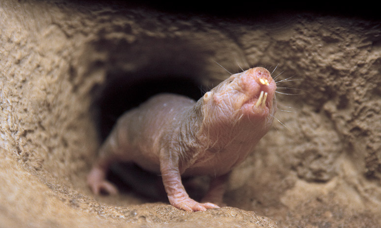
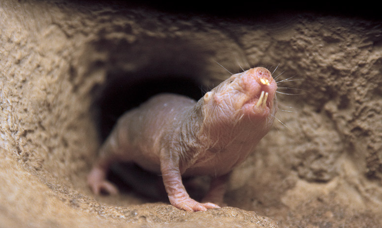
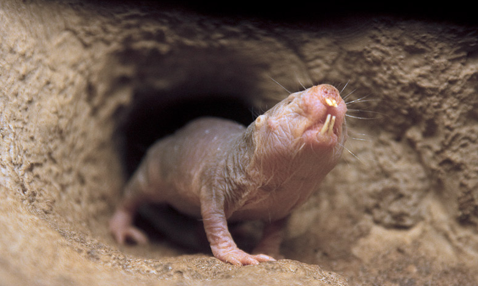
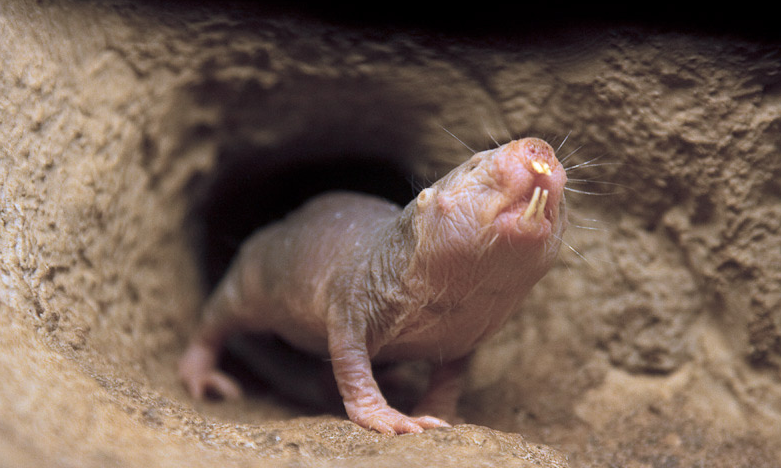

 Naked mole-rats live in underground burrows in the savanna and deserts of East Africa. |
 Naked mole rats eat underground roots and tubers. They live in colonies averaging 70-80 members, with some colonies home to as many as 300 animals. |

|
Most mole-rats live by themselves. But the naked mole-rat and the Damaraland mole-rat are the only two mammal species that are eusocial This means they live in a colony that may have several generations living together and just a few individuals that produce all the offspring for the colony, much the way bees and ants live.
Not a mole and not a rat, the naked mole-rat is one of the world's most unusual rodents. This fascinating creature lives in East Africa's deserts. They have pink, wrinkly skin and skinny, rat-like tails, and they dig and live in underground burrows the way moles do. Naked mole-rats are more closely related to porcupines, chinchillas, and guinea pigs than they are to moles or rats, and are the only mole-rats that have practically no hair.
The queen of the colony is larger and longer than all the other mole-rats. Her job is to breed and have pups, and to keep her position as the dominant mole-rat in the colony. But the queen is not born into her position: she must earn it. Females fight for the right to be queen. Once a queen is established, she actually stretches the space between the vertebrae in her backbone to become longer and get ready to have pups.